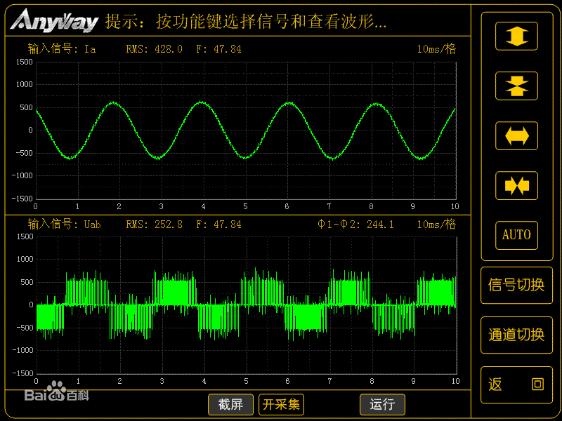
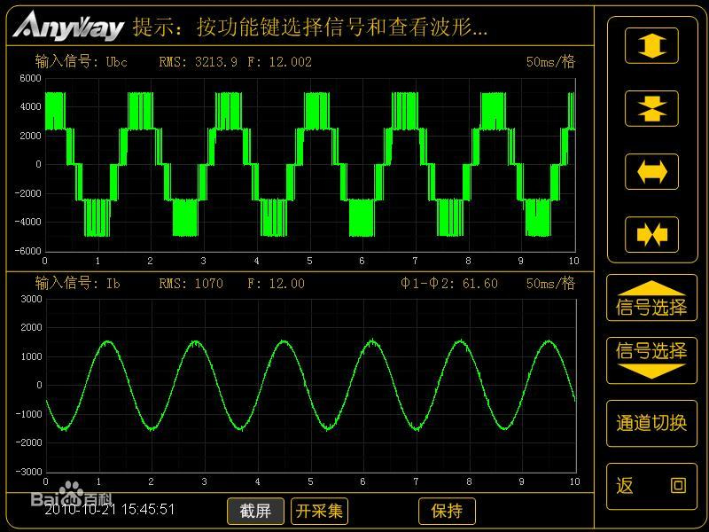

PWM
使用 PWM
当需要使用 PWM 驱动一些外设的时候，可以通过以下的代码进行驱动，对于不同的 Linux 开发板来说，PWM 信号输出的管脚号是不一样的，只需要修改 PWM 输出口
以下代码由于 Maixpy3 还在优化中，可能不能运行，具体的代码到 github 上查看
from maix import pwm
import time
pwm_output = pwm.PWM(6, freq=1000) # s设置输出 PWM 的管脚和频率
while True:
pwm_output.out(pulse_width_percent = 50) # 设置 PWM 的占空比并开始输出
time.sleep(1)
pwm_output.step() # 停止输出 pwm 信号
time.sleep(0.1)
什么是 PWM？
脉冲宽度调制是一种模拟控制方式，根据相应载荷的变化来调制晶体管基极或MOS管栅极的偏置，来实现晶体管或MOS管导通时间的改变，从而实现开关稳压电源输出的改变。这种方式能使电源的输出电压在工作条件变化时保持恒定，是利用微处理器的数字信号对模拟电路进行控制的一种非常有效的技术。脉冲宽度调制是利用微处理器的数字输出来对模拟电路进行控制的一种非常有效的技术，广泛应用在从测量、通信到功率控制与变换的许多领域中。
PWM 工作原理
脉宽调制（PWM）基本原理：控制方式就是对逆变电路开关器件的通断进行控制，使输出端得到一系列幅值相等但宽度不一致的脉冲，用这些脉冲来代替正弦波或所需要的波形。也就是在输出波形的半个周期中产生多个脉冲，使各脉冲的等值电压为正弦波形，所获得的输出平滑且低次谐波少。按一定的规则对各脉冲的宽度进行调制，既可改变逆变电路输出电压的大小，也可改变输出频率。
例如，把正弦半波波形分成N等份，就可把正弦半波看成由N个彼此相连的脉冲所组成的波形。这些脉冲宽度相等，都等于 π/n ，但幅值不等，且脉冲顶部不是水平直线，而是曲线，各脉冲的幅值按正弦规律变化。如果把上述脉冲序列用同样数量的等幅而不等宽的矩形脉冲序列代替，使矩形脉冲的中点和相应正弦等分的中点重合，且使矩形脉冲和相应正弦部分面积（即冲量）相等，就得到一组脉冲序列，这就是PWM波形。可以看出，各脉冲宽度是按正弦规律变化的。根据冲量相等效果相同的原理，PWM波形和正弦半波是等效的。对于正弦的负半周，也可以用同样的方法得到PWM波形。
在PWM波形中，各脉冲的幅值是相等的，要改变等效输出正弦波的幅值时，只要按同一比例系数改变各脉冲的宽度即可，因此在交－直－交变频器中，PWM逆变电路输出的脉冲电压就是直流侧电压的幅值。
根据上述原理，在给出了正弦波频率，幅值和半个周期内的脉冲数后，PWM波形各脉冲的宽度和间隔就可以准确计算出来。按照计算结果控制电路中各开关器件的通断，就可以得到所需要的PWM波形。下图为变频器输出的PWM波的实时波形。


源自百度百科